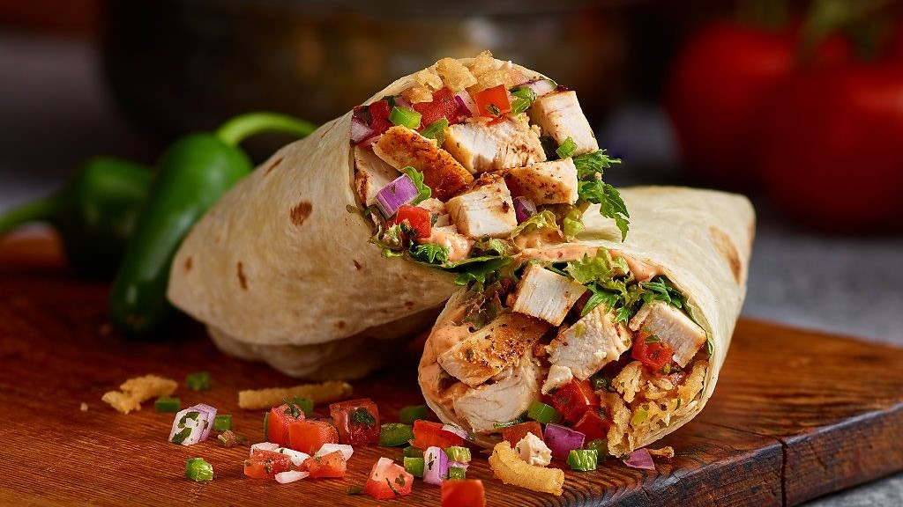
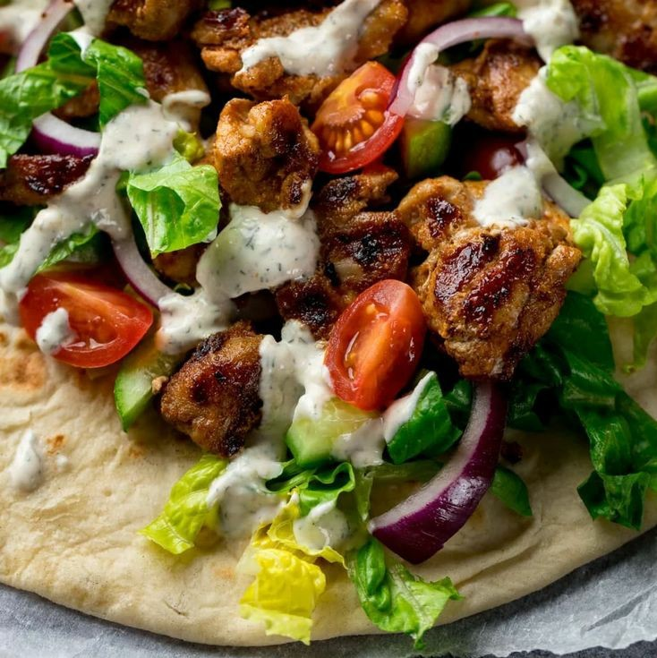

Description
This shredded chicken shawarma is my favorite shawarma.Its has a perfect balance of ingredients and looks great when it's made right.
Ingredients
- 1 inch size cut chicken breast or thigh
- 1 large garlic clove minced
- 1 tbsp extra virgin olive oil
- 1/2 tsp cumin powder
- 1/4 tsp all spice powder
- 1/2 tsp chilli powder
- 1/8 tsp turmeric
- 1/8 tsp cinnamon powder
- Salt to taste
- 1/8 tsp pepper
- 2 tbsp greek yogurt/hung curd(fresh,not sour)
- lettuce
- 1/2 tbsp lemon juice(optional)
- A grill pan and a wooden spoon
Directions
- Mix all the ingredients.Also add 2 tbsp greek yogurt/hung curd.
- Add 1/2 tbsp lemon juice only if needed to give a slight tang(optional).
- Mix all the ingredients and check the salt.
- Marinate chicken well.The marinde must be thick and not runny.
- Cover and refrigerate for at least 12 hours.I prefer 24 hours.The longer it rests that much it turns more tender and flavourful.
- Grill the chicken in an pan or grill pan.
- Turn the flame to the highest.Heat a non stick pan with 1/2 tbsp oil.When the pan turns hot,place the chicken pieces seperately without crowding.Flip them into all sides for even cooking.Do not crowd the pan.Chicken will begin to release the moisture if crowded.
- When the marinade almost begins to caramelize then put the flame to medium high.Continue to cook until the marinade completely dries up and the chicken is completely cooked.Since the chicken is marinated in yogurt,it cooks fast.
- You will have to control the flame.Switch off the flame once it is cooked well.Quickly with a wooden spoon cut the chicken further.
- Set the chicken aside.Add quartered layers seperated onions and quartered deseeded tomatoes to the pan and toss for few minutes on a high flame.
Making the Garlic Yogurt Sauce
This can be used as a dip or spread on the wrap.
- Add 1/4 cup greek yogurt/hung curd,1 tbsp minced garlic,salt 1 or 2 tbsp olive and lemon juice(optional).Skip lemon if using sour yogurt.
- Mix everything well.
Serving
Chicken shawarma is great as a party appetizer or even as a meal if you can wrap it up in a tortillas,naan or roti.
- Spread the sauce generously on a tortilla,naan or roti.
- Then place lettuce,shredded chicken,then grilled onions and tomatoes.You can also use any of your hot sauces.
- Wrap and enjoy the delicious Chicken Shawarma roll.